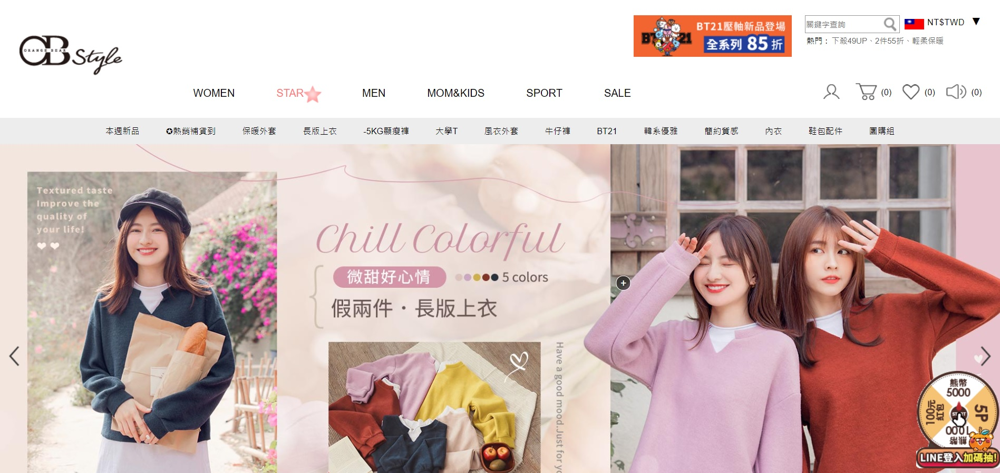

雖然近年來電商熱潮不斷，市場一片看好，但確實有許多存在於內部及外部的問題。尤其在現在電商市場差不多來到了飽和期，成長動能有限，紅利也不復以往，如何解決這些問題穩定成長，並持續找到新的營利模式，成為現在的首要任務。
第一個是老舊的系統，這其實也是許多公司的問題。雖然老舊的系統跟新的系統都可以達成原本的目的，但期間的維護費，還有不直覺的介面設計，造成員工適應的時間成本，都在無形中降低公司的利潤。當然，更新系統也要審慎評估，像南山人壽更新系統後，反而產生更多的成本。
延伸閱讀：新系統崩壞！看出南山人壽3點錯誤 尹衍樑購併後「專業能力」陷囧境第二個是廣告的氾濫，電商平台除了銷售抽成，販售廣告欄位及廣告套餐也是重要的營收來源之一。因此，有時面對原廠較為苛刻的要求，大部分的電商平台甚至沒有拒絕的權利。
我們甚至可以從其身上看到Facebook跟Youtube的影子。事實證明，就算一開始是從使用者的角度出發，這些產品最後都捨棄不了廣告這塊大餅，此舉也讓其他廣告較少的新興平台有了崛起的機會。
隨著科技的進步，現在架設電商平台已經不是困難的事情，也因此，現在的電商市場呈現一個群雄割據的場面。
除了一般的電商平台，你還可以去各式的拍賣網站、企業透過91APP架設的電商網站、Facebook代購社團，甚至是LINE群團購等管道，購買想要的東西。
舉例來說，現在許多人都會在IG上購買衣服，如果是韓國代購，那這部分本來就是大型電商很難去守住的一塊市場，因為代購的模式就是有人下單了才去批貨。
但是，這件事對大型電商平台真正的影響是，原本會來逛衣服的人，也可能會順便購買其他的東西，但是現在這種可能卻被扼殺了。
另一個例子，誠如前面所提到的，因為電商平台架設門檻降低，許多企業寧可自己架平台，也不願給第三方抽成，例如：Uniqulo、OB嚴選等。
會逛這些品牌的人，原本會順便購買電商平台內的其他商品，現在則連門口都不會踏進來。比起被分掉的市場，少掉的周邊效益更令人擔憂。
另一個外患則是Google政策近年來的變動。首先，Google大刀闊斧的Dedupe（資料去重複化），強制讓使用者做關鍵字搜尋時，同一個網域盡量只會出現一次，這讓重視數據表現的電商平台不得不重新擬定關鍵字策略。
再來，就是最近Google宣布未來將不支援第三方cookies，這讓所有依靠第三方cookies追蹤數據的網路廣告產業跌破眼鏡。相信未來，會有很多公司開始學著建立自己的數據追蹤資料庫，建立自己的第一方數據技術。
面對飽和的市場，許多人想出了創新的商業模式。有些人用IG行銷，導流至蝦皮拍賣，竟也可以創造不下小型公司的利潤；有些公司用Dropshipping，省去了囤貨的成本。
不管如何，這些都是目前電商平台在努力嘗試的方向，但如果無法突破現有架構，重新抓住使用者目光的話，最後也只會淪為互相模仿、互相競價的遊戲。